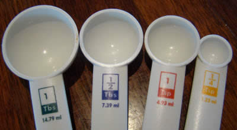

Cooking Measurements
Recipes use Volume or Weight (Mass) measurements.
Volume
Water, milk, flour, sugar, oil and many more can be measured using:
- teaspoons
- tablespoons
- cups
- fluid ounces
- pints
- liters
Some are metric, others US Standard, but it doesn't matter when we have some measuring spoons and cups.

These are Measuring Spoons:
- 1 tablespoon
- 1/2 tablespoon
- 1 teaspoon
- 1/4 teaspoon

And this is a measuring cup showing milliliters (ml):
In fact it shows 150 ml.
It doesn't say "150" ... it says "50" ... but it is half-way between 100 and 200 so we can figure out it is 150 ml.
But what about recipes that ask for a measure we don't have? Never fear! We can find equivalent measures that we do have.
Rough Equivalent Volumes
ml: milliliters, tsp: teaspoon, Tbs: tablespoon, fl oz: fluid ounces
These are not all exact, but close enough for cooking:
| ml | tsp | Tbs | cups | fl oz | pints | quarts |
| 5 ml | 1 tsp | |||||
| 15 ml | 3 tsp | 1 Tbs | ||||
| 30 ml | 6 tsp | 2 Tbs | 1/8 cup | 1 fl oz | ||
| 60 ml | 4 Tbs | 1/4 cup | 2 fl oz | |||
| 120 ml | 8 Tbs | 1/2 cup | 4 fl oz | |||
| 250 ml | 16 Tbs | 1 cup | 8 fl oz | |||
| 500 ml | 2 cups | 16 fl oz | 1 pint | |||
| 1 liter | 4 cups | 32 fl oz | 2 pints | 1 quart | ||
| 2 liters | 4 pints | 2 quarts |
The table above rounds some values to make it simpler.
- 1 cup in the US is 240 ml, in the UK is 284 ml, in Australia is 250 ml
- 1 fl oz (fluid ounce) in the US is 29.57 ml, in the UK is 28.41 ml
- 1 pint. A US dry pint is about 550 ml, a liquid pint about 473 ml. In the UK about 568 ml
- 1 quart in the US is 946 ml, in the UK is 1136 ml
Weight (Mass)
Recipes may also use these weight (mass) measures
- ounces
- pounds
- grams
- kilograms
Rough Equivalent Weights
These are not all exact, but close enough for cooking:
| grams | ounces | pounds |
| 30 g | 1 oz | |
| 60 g | 2 oz | |
| 120 g | 4 oz | ¼ lb |
| 230 g | 8 oz | ½ lb |
| 450 g | 16 oz | 1 lb |
| 900 g | 32 oz | 2 lb |
"A Liter is a Kilogram"
This is based on the idea that a liter of water has a mass of about 1 kilogram. It also works for similar fluids like milk and juice
But liters and kilograms are different things.
But be careful! This won't work if the fluid's density is not like water. For example a liter of honey has a mass of about 1.4 kg.
"A Pint is a Pound"
This is based on the idea that 16 fluid ounces of water (1 pint) has a mass of about 16 ounces (1 pound). It also works for similar fluids like milk and juice.
But ounces and fluid ounces are different things.
But be careful! This won't work if the fluid's density is not like water. For example a pint of honey has a mass of about 24 ounces (1½ pounds).